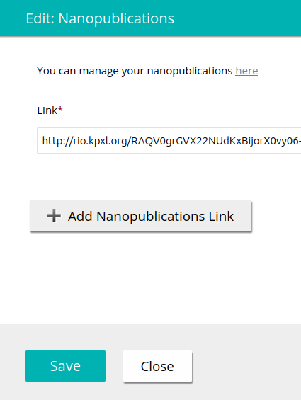

Create Nanopublication
Select Template
Fill in and Publish
Connect to Submission
Nanopublication

Author Instruction
To include this nanopublication in your submission, use this link:
Paste it in the ARPHA Writing Tool as a "Nanopublications" element:
Help
Don't hesitate to open a support ticket if you have any questions or problems, no matter how trivial or how complex.